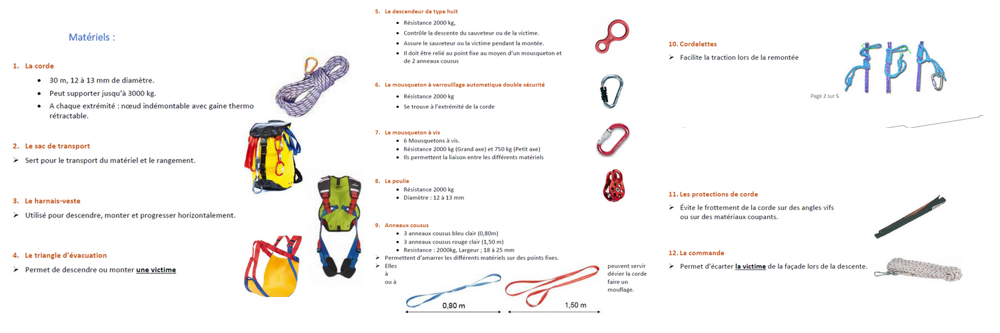
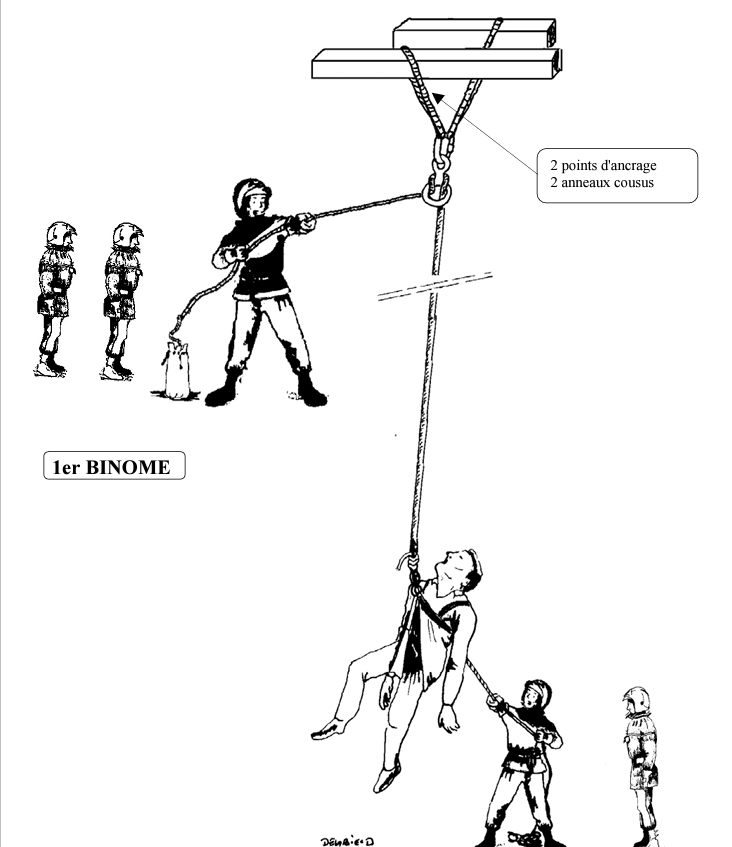
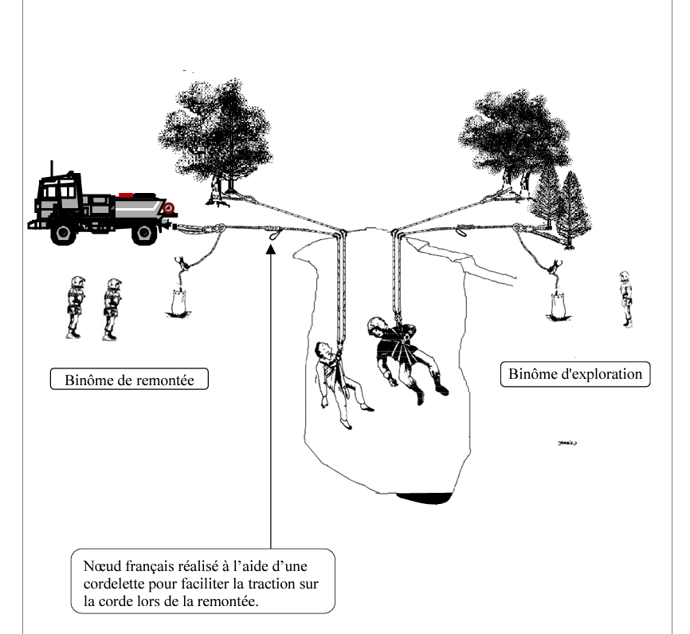
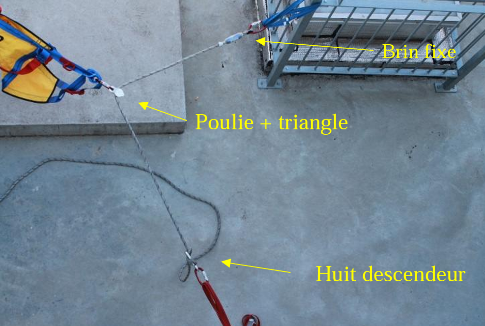
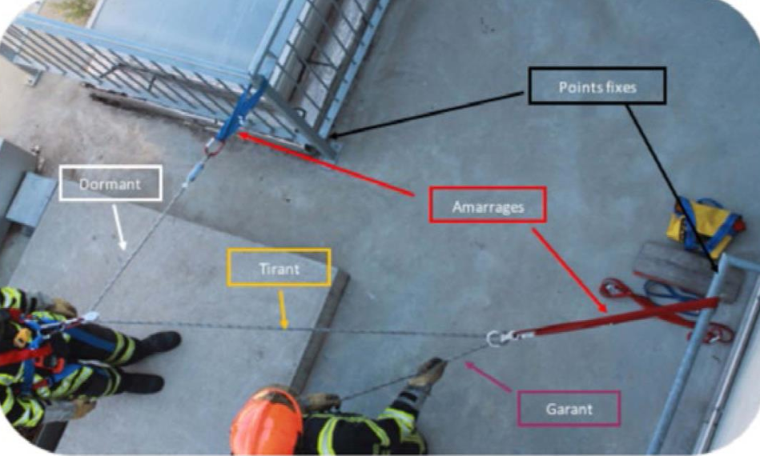
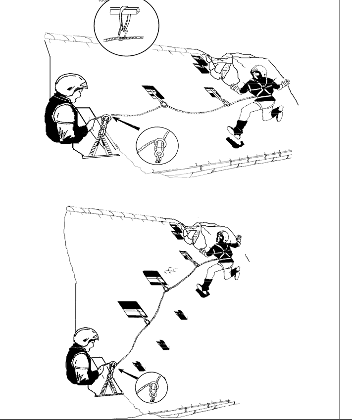
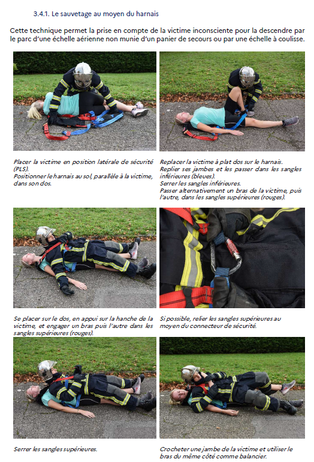

Lot de sauvetage et de protection contre les chutes

Manœuvres LSPCC
Sauvetage par l’extérieur

Sauvetage par excavation



Dispositif contre les chutes

Reconnaissance et ouverture de porte
Voir les notes dans Chef d’équipe
Sauvetage au moyen du harnais
